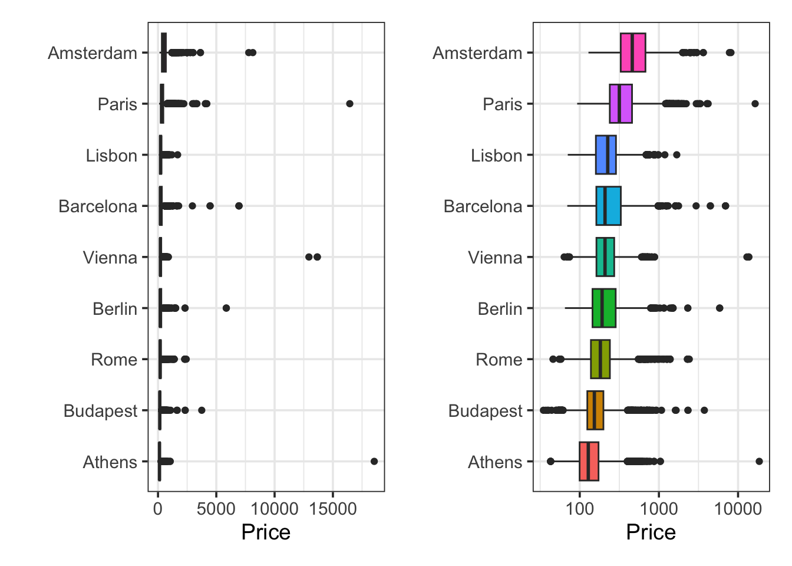

AirBnB is a company that facilitates the pairing of vacation and long-term renters and property owners across the world. This project seeks to construct a predictive model for the pricing of AirBnB rentals across Europe. This benefits AirBnB as well as its property owners because the model can help with price setting, ensuring that owners are not setting rental prices too low. Additionally, the model could benefit renters as well by helping them to identify properties that are reasonably priced.
Executive Summary
Introduction
Exploratory Data Analysis
In this section, we set out to understand the distribution of the price variable as well as to identify available features that may be associated with the listing price for an AirBnB Europe property. Throughout this section, we’ll be working with a collection of 35456 training listings (observations). Before we begin our analysis, a snippet showing our first six rows of available training properties appears below.
Code
train %>%head() %>%kable() %>%kable_styling()
city
price
day
room_type
shared_room
private_room
person_capacity
superhost
multiple_rooms
business
cleanliness_rating
guest_satisfaction
bedrooms
city_center_km
metro_distance_km
attraction_index
normalised_attraction_index
restraunt_index
normalised_restraunt_index
Berlin
353.60381
Weekend
Entire home/apt
FALSE
FALSE
5
TRUE
0
0
10
98
1
4.7613998
0.2275156
114.2493
17.413948
139.4354
29.50029
Rome
423.16415
Weekday
Entire home/apt
FALSE
FALSE
6
FALSE
0
1
10
98
2
2.4975278
0.9290282
738.6356
16.368311
1643.4348
35.78220
Lisbon
246.24765
Weekday
Entire home/apt
FALSE
FALSE
4
FALSE
0
1
9
89
2
0.9743672
0.4455236
325.0232
10.730409
678.8510
30.36075
Lisbon
176.36023
Weekday
Private room
FALSE
TRUE
2
FALSE
0
1
10
96
0
2.4933377
0.3619793
108.1352
3.570008
321.8487
14.39427
Rome
97.02382
Weekend
Private room
FALSE
TRUE
2
FALSE
1
0
10
95
1
5.4952277
1.3955865
232.5740
5.152779
563.9774
12.28770
Budapest
231.94059
Weekday
Entire home/apt
FALSE
FALSE
5
FALSE
1
0
10
94
2
1.6776501
0.2308218
141.8491
8.459128
320.0273
24.23345
Distribution of Price
We first need to understand the distribution of the listing price variable. In the output below, the table on the left shows some summary statistics of the price variable and the plots on the right shows its distribution.
We can see from the table and from the plots that the distribution of price is quite strongly right-skewed. There is a property here listed at 18,545.45 – perhaps units here are an issue and listings are priced in local currency. We’ll explore whether this is the case and we need a transformation later. For now, the lower-right plot shows that the distribution of price is approximately log-normal (that is, the distribution of the logarithm of price is approximately normal). The vast majority of properties are priced between 100 and 1,000 – which seems quite reasonable. The average listing (considering both mean and median) looks to be priced within the 200 - 300 range.
Now that we understand a bit about the distribution of the price variable, let’s try to identify other variables that may be associated with the listing price for a property.
Price and City
It seems reasonable to assume that the average listing price may vary by city. In fact, given the distribution of prices, we’ve mentioned that the currency unit may vary from one city to the next. We’ll start by looking at how many properties there are in each city and we’ll look at whether there is a potential association between city and listing price.
We can see that Rome has the greatest number of property listings, which Amsterdam has the fewest. No city has an extremely small number of listings though. Now let’s consider the average listing price by city.
Code
p1 <- train %>%mutate(city =fct_reorder(city, price)) %>%ggplot() +geom_boxplot(aes(x = price, y = city, fill = city),show.legend =FALSE) +labs(x ="Price", y ="")p2 <- train %>%mutate(city =fct_reorder(city, price)) %>%ggplot() +geom_boxplot(aes(x = price, y = city, fill = city),show.legend =FALSE) +scale_x_log10() +labs(x ="Price", y ="")p1 + p2

The plot on the left isn’t very legible because of the presence of properties whose prices are extreme outliers. The plot on the right shows the same information, but with price on a logarithmic scale. We can see here that Amsterdam is the most expensive location on average, while Athens is the cheapest. From here, we can see that city is associated with the price variable.
Guest Satisfaction and Price
Similar to what we did with city, it is reasonable to wonder whether guest_satisfaction and price are associated with one another. We’ll begin with an analysis of the distribution of the guest_satisfaction variable and then we’ll consider whether there is visual evidence to suggest an association between the two variables.
We can see from the table and the plot above that guest_satisfaction is generally quite high. Most of the observed satisfaction scores fall between 75 and 100. Although the variability of this feature is not high, let’s construct a scatterplot to determine whether there may be an association between guest_satisfaction and price.
These plots are somewhat difficult to read. There is no obvious association between the guest satisfaction score and the price variable from either of these. The only difference between the plot on the left and the plot on the right is that the plot on the right shows the listing price on a logarithmic scale.
Because of the collections of vertically aligned points at guest_satisfaction scores like 20, 40, 60, etc. we might be able to build a collection of side-by-side boxplots here – we’ll see if doing so provides any additional insights below.
Even from this plot, there doesn’t see to be an obvious association between guest_satisfaction and listing price. We won’t exclude this predictor from our modeling process altogether, but we don’t have great hope that guest_satisfaction is a strong predictor of price.